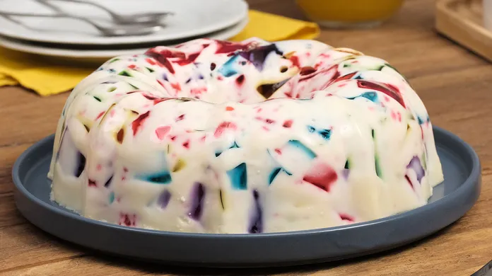

Receita de Gelatina Colorida

Gelatina colorida é uma excelente escolha para celebrar momentos e yuppi e yiipee gostoso!
Ingredientes
- 5 caixinhas de gelatina de diferentes sabores
- 2 caixinhas de creme de leite
- 1 lata de leite condensado
- 1 saquinho de gelatina incolor
Passo a passo
- Prepare as gelatinas normar
- Deixe na geladeira até endurecer
- Bata o creme de leite com o leite condensado
- Siga a receita da gelatina incolor e adicione a mistura anterior
- Apos o endurecimento das gelatinas, corte-as em pequenos quadrados
- Misture com o creme do liquidificador e deixe por pelo menos duas horas
Sua gelatina colorida está pronta!